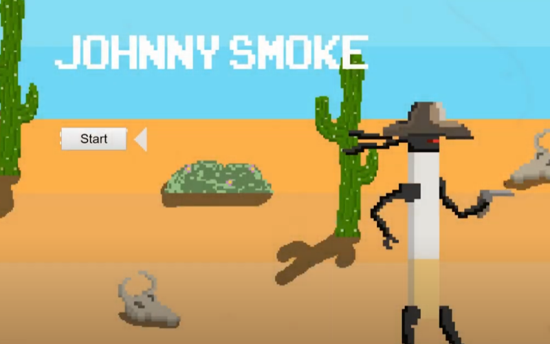
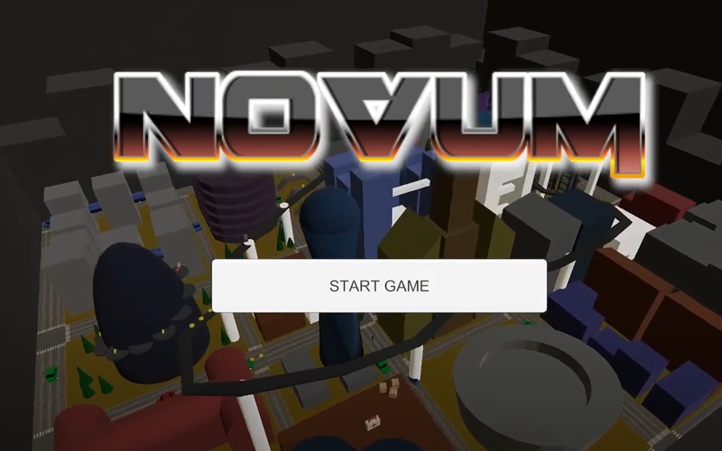
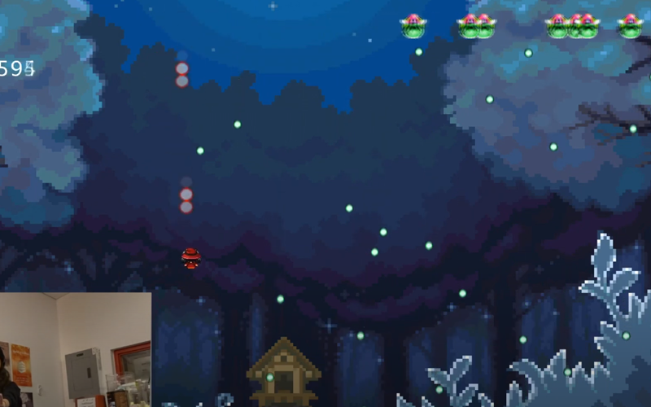

My Game Development Projects
Below is a showcase of my game development projects, highlighting my
journey in creating games that I'm proud of. Each project represents a
milestone in my growth as a developer.

Johnny Smoke
"Johnny Smoke" is a 2D sidescrolling platformer where the player
controls Johnny Smoke as he explores a desert in search of Iron
Lung, shooting Lungs that get in the way.
This game was a collaborative project between four classmates for a
Game Design class. My main responsibility was bringing all the art
assets and creative elements together using Construct 2, the engine
we used for development.
Technologies Used: Construct 2

Novum
"Novum" is a 3D collectathon platformer set in a post-apocalyptic
city after a deadly epidemic. As supplies run low, you must venture
from an underground shelter to scavenge for resources.
This game was a team effort between my classmate and myself. I
handled coding and asset integration, while they created the models
and graphics. We used Unity and Blender for the project.
Technologies Used: Unity, Blender

Fantasy Bullet Heck
Fantasy Bullet Heck is a 2D bullet-hell video game where you use
your hand with an Xbox Kinect to control a character on screen to
dodge bullets shot at you by fantasy creatures.
The game was made using Processing, a programming language based off
Java that is mainly used for electronic art.
Technologies Used: Processing, Xbox Kinect